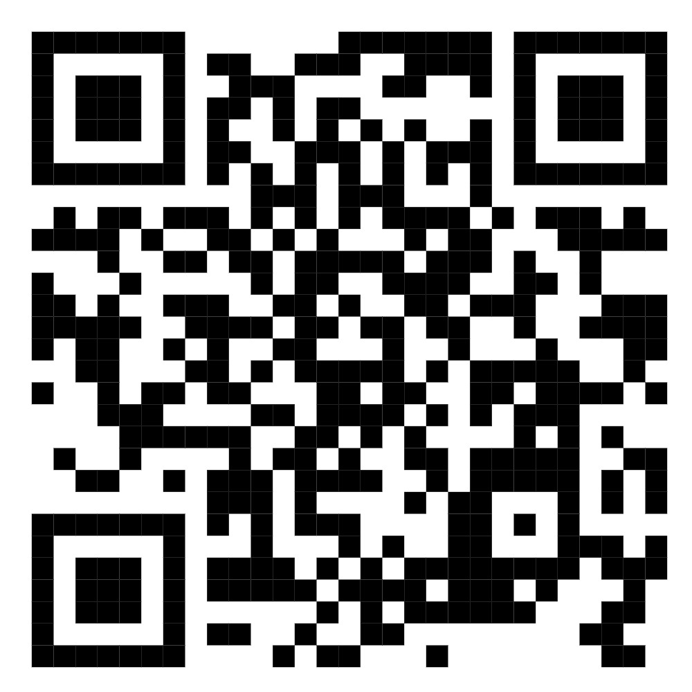

TelescopioAR
El Telescopio Digital
Apunta al cielo, caza la ISS en tiempo real y descifra la transmisión pirata.

sextantar.vercel.app
TelescopioAR
Apunta al cielo, caza la ISS en tiempo real y descifra la transmisión pirata.

sextantar.vercel.app